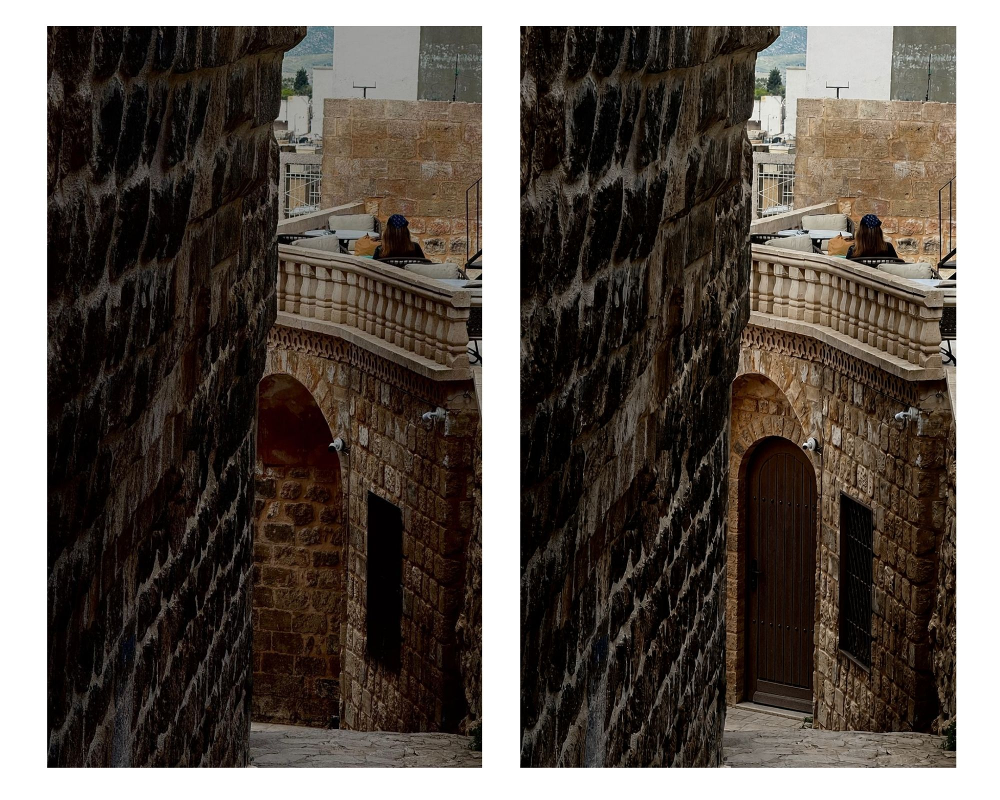
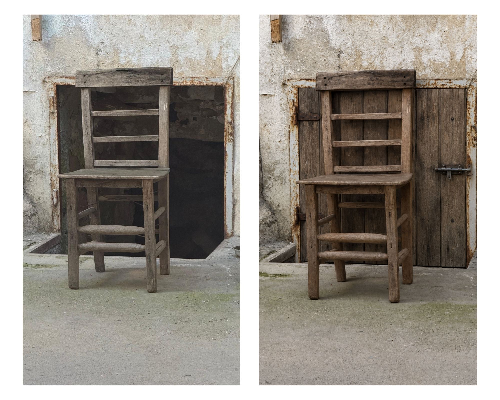

Eşik

İz
Eşik ve İz, görünmeyen, eksik bırakılmış ya da doğrudan temsil edilmeyen alanlar etrafında şekillenen iki diptikten oluşmaktadır. Sanatçı, insan ile yapay zekâ arasındaki üretim sürecini bir eşik deneyimi olarak ele almakta; bırakılan izleri ve geçişin belirsizliğini görsel bir dil aracılığıyla araştırmaktadır.
Threshold and Trace consist of two diptychs shaped around spaces that are invisible, left incomplete, or not directly represented. The artist approaches the production process between human and artificial intelligence as a threshold experience, investigating the traces left behind and the ambiguity of transition through a visual language.